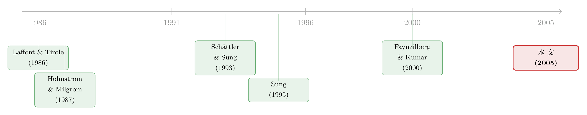

当老板既藏着本事、又能挑风险：一纸最优合约里被翻转的「风险—激励」常识
本文读的是 Sung (2005, Review of Financial Studies)：在一个连续时间的委托代理模型里，同时塞进 逆向选择 (adverse selection) 和 道德风险 (moral hazard)，让风险厌恶的经理既能控制产出的均值、又能控制产出的方差。作者证明最优合约是线性的；并发现一旦道德风险叠加到逆向选择上，「波动越高、激励越平」这条教科书常识可能被翻转——有时反而是「波动越高、激励越陡」，而且收到好消息的公司有时会去挑更安全的项目、投得更少。
1 引言：两道裂缝，偏偏被分开来补
现代公司金融里有两道几乎人人都会念的「裂缝」。
一道叫 道德风险 (moral hazard)：经理签了约之后开始偷懒，而你看不见他到底出了几分力。另一道叫 逆向选择 (adverse selection)：签约之前（或之后）经理就比你更清楚自己几斤几两——他知道自己的「能力」θ，你不知道。
现实里，这两道裂缝几乎从不单独出现。一个投行家替 IPO 发行人定价，一个风险投资人面对创业者，一个基金经理替你管钱——每一处都是「既看不清他的努力、又猜不透他的本事」。可是在文献里，人们却长期把它们拆开来补：要么只研究道德风险，要么只研究逆向选择。
为什么拆开？因为合在一起太难算。作者一句话点破了症结：一个真正「够用」的代理模型，至少要满足两个条件——(1) 经理能同时控制产出的均值和方差，(2) 经理是风险厌恶的。可偏偏，把这两条同时塞进一个离散时间的契约模型，就会撞上臭名昭著的技术障碍：一阶方法 (first-order approach) 不一定合法，解的代数结构复杂到「就算有解也写不出来」。
为什么非要经理能控制方差？因为绝大多数财务决策，本质都是在「风险」和「回报」之间做权衡——挑项目、定投资规模，都是在挑波动。而为什么非要他风险厌恶？因为如果经理只在乎期望收益、对风险无动于衷，那么「公司风险管理」这件事根本就不存在了。
于是，一个自然的问题是：有没有一个框架，能把这两个特征同时装下，还能把最优合约解出来？作者给出的答案是——换到连续时间里去。
2 把问题搬到连续时间：模型设定
接着，我们来看这台机器是怎么搭的。
技术（产出过程）。 在合约期 [0,1] 内，公司的累积产出 {Y_t} 由一个带漂移的布朗运动驱动：
$$dY_t = f(\mu_t,\sigma_t)\,dt + \sigma_t\,dB_t$$
这里 {B_t} 是标准维纳过程，μ_t 是经理控制的漂移努力，σ_t 是他控制的扩散率（波动率）。漂移 f(μ,σ) 在 μ 上严格递增（出力越多、产出期望越高），且 f_μ 有正的下界。
偏好。 委托人（投资者）风险中性，只关心 E[Y_1 - S]：期末产出减去付给经理的报酬。代理人（经理）是 常绝对风险厌恶 (constant absolute risk aversion, CARA)，风险厌恶系数 r > 0，他在意的是
$$-\exp\!\Big\{-r\Big(S(Y_1,\theta) - \textstyle\int_0^1 c(\mu_s,\sigma_s,\theta)\,ds\Big)\Big\}$$
其中 c(μ,σ,θ) 是瞬时努力成本，θ 是经理的私有「能力/类型」，分布在区间 [θ_L,θ_H] 上、密度 h(θ)>0。约定 c_θ > 0，也就是 θ 越大越「贵」、越没效率，θ_H 是最没效率的那一类。
两层信息不对称。 这正是全文的张力所在：
- 关于
θ的不对称（逆向选择）：签约前就存在，经理知道、委托人不知道。 - 关于
{Y_t}中间路径的不对称（道德风险）：签约后由经理的努力内生决定。委托人只能观测到期初Y_0和期末Y_1，看不到中间的盈利路径——现实里，投资者拿到的是经过审计的期末财报，而逐期核验中间盈利「贵到不经济」。
然后，作者把波动率的「可观测性」分成两种情形：
- 情形 1（可观测波动）：经理在
0时刻一次性选定σ，且这个σ可验证、可写进合约。每份合约由一个分成规则S(Y_1,θ)加一个波动水平σ(θ)构成。 - 情形 2（不可观测波动）：经理持续地、私下地调整
{σ_t}，委托人看不见，合约里只能写S(Y_1,θ)。
3 为什么最优合约一定是「线性」的？
这是全篇第一个、也是最优雅的结论：最优菜单由线性合约组成——S(Y_1,θ) = (常数项) + β(θ)·Y_1。
但真正关键的一步，在于为什么会线性。直觉是这样的：
逆向选择文献早就告诉我们，为了诱使经理说真话、吐露私有信息，委托人必须付一笔 信息租金 (information rent)。在连续时间里，这笔租金可以写成一个随机过程的期望——作者称之为「信息租金过程」。在任意中间时点 t<1，这个过程其实是「假如经理在 0 时刻挑错了一份（边际上略偏的）合约，他到 t 为止会多攒下的瞬时效用增量率」。一般来说，这个率是路径依赖的。
于是问题来了：如果委托人能看到整条产出路径 {Y_t}，她在设计菜单时就得把这条路径依赖的租金过程考虑进去，整个系统就不再平稳，最优控制会随时间变化。
但真正的转折是——委托人只看得到期末的 Y_1。她关心的不是租金过程的逐点取值，而是它的期望值。而由于在 [0,1) 内委托人的信息一直没变（她中途什么都看不到），这个期望值不随时间改变。系统因此重新变回平稳。平稳 ⟹ 最优控制 (μ*,σ*) 在时间上恒定 ⟹ 报酬对 Y_1 的依赖是线性的。这一论证承接了 Holmstrom & Milgrom (1987) 与 Sung (1995) 在纯道德风险下得到的线性性。
换句话说：线性不是作者假设出来的（很多离散时间模型是先限定「只考虑线性合约」），而是从「委托人信息受限于 {Y_0,Y_1}」这一条推导出来的。这正是连续时间框架的红利。
4 模型核心：哈密顿量与那把「最优」标尺
既然控制恒定，最优的 (μ*(θ),σ*(θ)) 就由最大化委托人的哈密顿量 (Hamiltonian) 得到。这是整篇论文的中枢方程，我们把它拆开看：
这里 v(θ) 是逆向选择文献里典型的「逆风险率」项：
$$v(\theta) := \frac{\int_{\theta_L}^{\theta} h(\theta')\,d\theta'}{h(\theta)}$$
把这四块连起来读，整张图景就清楚了：委托人想最大化产出 f，要扣掉努力成本 c，要扣掉因为经理风险厌恶而欠下的风险溢价（a3，这是道德风险留下的疤），还要再扣掉为了让经理说真话而付的信息租金（a4，这是逆向选择留下的疤）。
把 a4 项设为零（即 v ≡ 0），最大化 H 得到的就是纯道德风险下的解，作者称之为 第二优 (second best) (μ_2nd,σ_2nd)；保留 a4，得到的就是逆向选择叠加道德风险下的解，称为 第三优 (third best) (μ*,σ*)。
相应地，第三优的最优分成规则（情形 1）写出来是：
$$S^*(Y_1,\theta) = w_0 + \underbrace{\int_{\theta}^{\theta_H} c_\theta(\mu^*,\sigma^*,\theta')\,d\theta'}_{\text{vs. 2nd best 多出的一项}} + c(\mu^*,\sigma^*,\theta) + \frac{r\,c_\mu^2}{2 f_\mu^2}(\sigma^*)^2 - \frac{c_\mu}{f_\mu}f(\mu^*,\sigma^*) + \frac{c_\mu(\mu^*,\sigma^*,\theta)}{f_\mu(\mu^*,\sigma^*)}\,Y_1$$
（上式的下括注只是文字标记，公式本身的符号与论文一致。）看最后一项：报酬对 Y_1 的斜率，也就是合约的敏感度 β，正是
$$\beta(\theta) = \frac{c_\mu(\mu^*,\sigma^*,\theta)}{f_\mu(\mu^*,\sigma^*)}.$$
中间那个积分项 ∫_θ^{θ_H} c_θ dθ' 就是信息租金：它在 θ=θ_H（最没效率的类型）处为零——最差的类型拿不到任何信息租金，这是逆向选择的标准结论；除了它，每一类经理都要比纯道德风险下被付得更多。
5 被翻转的常识：波动越高，激励一定越平吗？
到这里，铺垫都做完了，于是反转出现了。
教科书里的「常识」是这样的：经理风险厌恶，波动 σ 越高，他承担的薪酬风险越大，那笔风险溢价 (r/2)β²σ² 就越贵；为了不让经理扛太多风险，委托人会在 σ 高时调低敏感度 β。结论：波动与激励负相关。
可作者指出：在第三优的世界里，这条关系取决于经理成本函数与公司生产函数之间的相互作用。
关键就在 β = c_μ/f_μ 这个分式，以及波动 σ 对「努力生产率」f_μ 的影响。
- 若努力生产率不受波动影响（
f_μ与σ无关）：那条人人熟悉的负相关成立——无论波动是否可观测，敏感度越高、波动越低。 - 但若高波动反过来「抬高」了努力的生产率（
f_μ随σ上升）：事情可能整个翻过来。此时提高σ给投资者带来两股相反的力量：一股负向——抬高了经理薪酬的风险溢价；一股正向——抬高了努力的边际产出。若净效应为正，委托人就会在σ上升时反而愿意调高β。于是：波动越高、激励越陡。
这就推翻了「高波动 ⟹ 平激励」的直觉。（关于高管薪酬里风险与激励如何被客户结构、生存风险等因素扭转，可参见《几个大客户，怎样把「赌性」写进了 CEO 的工资条》与《股票还是期权？把「破产」写进高管的工资条》。）
更反直觉的还有两条：
其一，「好消息」的公司有时反而求稳、投得更少。 既然 σ 可以被解读为「项目选择」或「投资规模」，那么当公司收到好消息（更高的 θ 或更高的产出前景）时，最优的项目波动有时会下降——它会去挑更安全的项目、投得更少。这与「好消息就该大干一场」的朴素想法相反。
其二，不可观测的波动通常更低，但偶尔更高。 给定一份合约，经理在波动不可观测时倾向于做更保守的项目选择（「经理保守主义」）——因为风险最终落在他自己头上。所以一般而言，第二优与第三优世界里，不可观测的波动都低于可观测的波动。但当经理努力相对项目选择不那么重要时，会出现相反的情形：不可观测波动反而更高。作者论证，这种「反例」在第三优里比第二优更容易发生——因为第三优的敏感度通常更低，经理努力的分量也更轻。这一点恰好有条件地支持了 DeMarzo & Duffie (1995) 的一个猜想：低效的经理可能为了「赌一把幸运抽签」而选择更高风险的项目。不过作者强调，在多数情形下这个猜想并不成立，正是因为私下选项目时的「经理保守主义」压住了它。
还有一处被改写的「常识」：在纯逆向选择文献里，为诱导信息披露，人们通常加上 Spence–Mirrlees 单交叉条件与单调性条件（菜单中合约的敏感度随类型非降）。但作者指出，一旦道德风险叠加进来，经理选了某份合约也不会被锁死在某个努力水平上——他仍可机会主义地偏离委托人想要的努力。于是经典的单调性条件必须被修改，以对冲这种「努力选择上的机会主义」（见正文不等式 (6) 与 (15)）。
6 文献脉络
让我们把这条线索捋一捋。
最早，道德风险与逆向选择是两条平行的河。道德风险这边，从 Mirrlees (1999，工作实则始于 1970 年代) 到 Holmstrom 的一系列工作，奠定了「努力不可观测」的契约分析；其中真正把它搬进连续时间、并证明「最优激励是线性」的里程碑，是 Holmstrom & Milgrom (1987)。逆向选择这边，则有 Laffont & Tirole (1986) 用「成本观测来规制企业」的经典框架。

接着，连续时间道德风险被一步步做精：Schättler & Sung (1993) 把一阶方法严格化（指数效用下的连续时间委托代理），Sung (1995) 进一步让经理同时控制漂移与扩散率、并引入项目选择——但这些仍停留在纯道德风险的世界里。
与此同时，也有人尝试把两道裂缝合在一起补：McAfee & McMillan (1986) 与 Baron & Besanko (1987) 研究了带噪声产出、风险厌恶代理人下的道德风险加逆向选择；Faynzilberg & Kumar (2000) 给出了一个二项产出、风险厌恶、两种摩擦并存模型的闭式解。但这些工作，要么不让经理控制方差，要么把合约形式事先限定。
这篇论文就坐落在这两条河的交汇处：它在连续时间里，让风险厌恶的经理同时控制均值与方差，把逆向选择与道德风险一并装下，并且把最优合约（而非事先限定的线性/二次合约）解了出来。后续连续时间代理理论（如 Ou-Yang (2003) 的委托组合管理）也沿着这条河继续流淌。
7 模型应用：项目选择与资本预算
最后，作者把这套一般结论落到几个高管薪酬问题上：经理付出有成本的努力去控制漂移，但可以无成本地挑选波动。挑波动会影响公司在薪酬之前的 净现值 (net present value, NPV)——通常给定漂移，波动越高、NPV 越高。于是「挑波动」就等价于「挑项目」，也等价于「定投资规模」（高投资让美元产出更波动）。
在这个应用里，前面那些抽象结论被翻译成可以直接和公司金融对话的语言：第三优下的投资规模、项目风险与激励敏感度之间的关系，统统取决于「努力生产率是否随波动上升」这一条。这也把模型与投资—代理那条更宽的研究线连了起来（可参见《好表现的奖励，不是奖金，而是「明天更大的盘子」——代理冲突如何写出公司的投资节律》与《把债、信贷额度和股权，从一个代理问题里「长」出来》；以及把道德风险接进资产定价的《老板的奖金，定不了股票的「期望收益」，却定得了它的「价格」》）。
8 评论与延伸（Q&A + 研究方向）
(a) 几个可能的疑问
Q：线性合约到底是「假设」还是「结论」？
是结论。很多离散时间模型一上来就限定「只看线性（或二次）合约」，再求最优系数。本文不同：线性性是从「委托人只观测
Y_0,Y_1、且基于0时刻信息实施控制」这一信息约束推导出来的——信息租金过程的期望不随时间变，系统平稳，最优控制恒定，故合约对Y_1线性。这正是连续时间 + CARA + 布朗产出这套结构的红利，承接 Holmstrom & Milgrom (1987)。
Q：第一优、第二优、第三优分别指什么？
第一优是完全信息下的标杆；第二优是只有道德风险（在哈密顿量里令信息租金项
v≡0）；第三优是道德风险与逆向选择并存（保留v(θ)c_θ项）。三者用同一个哈密顿量、只是「扣掉哪几块摩擦」不同，对比起来非常干净。
Q：「波动越高、激励越陡」真的可能吗，会不会只是数学巧合？
机制是实的，不是巧合。敏感度
β = c_μ/f_μ。提高波动σ对投资者有两股力量：负向是抬高薪酬风险溢价(r/2)β²σ²，正向是（当f_μ随σ上升时）抬高努力的边际产出。两股力量孰大孰小，取决于成本函数与生产函数的交互。净效应为正时，正相关就出现。它要求一个具体条件——高波动「favorably」影响努力生产率——并非普适。
Q：为什么收到好消息反而可能求稳、少投？
因为波动等价于项目风险/投资规模，而最优风险水平由哈密顿量决定，并非「前景越好越该冒险」。当好消息改变了努力成本与生产率的相对重要性时，最优的
σ*可能下降。直觉上，好类型已经能稳稳拿到不错的产出，再加风险只会平白抬高要付给风险厌恶经理的溢价。
Q：这和 DeMarzo & Duffie (1995) 那个「差经理爱赌」的猜想是什么关系？
本文只有条件地支持它。当经理努力远不如项目选择重要时，不可观测波动可能高于可观测波动，低效经理确实可能选更高风险——像在赌一次幸运抽签。但作者强调，多数情形下这个猜想不成立，因为私下选项目时的「经理保守主义」压住了冒险冲动。
Q：单调性条件为什么必须修改？
纯逆向选择里，选了某份合约就等于被锁进某个努力水平，单调性（敏感度随类型非降）足以诱导说真话。但叠加道德风险后，经理选了合约仍能机会主义地偏离委托人想要的努力，因此经典单调性不够用，必须修改（正文不等式 (6) 与 (15)）以堵住努力选择上的机会主义。
(b) 几个可能的研究问题与提案
1. 把「波动可观测性」搬进真实的公司投资数据。 【经济故事】模型预言：波动不可观测时经理更保守，且这种「保守缺口」在第三优（信息更不对称的公司）里更大。【可行性】中。可用披露质量/分析师覆盖度作为「波动可观测性」的代理，看高不透明公司是否系统性地选更低波动的项目（如 R&D 占比、现金流波动）。识别难点在于把「不可观测」与「公司本身就稳健」分开，需要外生冲击（如监管披露改革）。
2. 把这套框架接到公司债/信用市场的契约上。 【经济故事】债权人也面对「既看不清努力、又猜不透类型」的经理，且债权人的支付对产出是凹的，风险厌恶含义不同。线性分成换成债务式的凹支付后，「波动—激励」关系会如何改写？【可行性】中偏低。纯理论扩展可行；要实证，需要能观测债务契约条款随发行人不透明度变化的数据（如贷款合约的业绩触发条款）。
3. 外资持有人作为「更难观测中间路径」的委托人。
【经济故事】跨境投资者拿到的中间信息更少、更依赖期末财报，恰好对应模型里「只看 Y_0,Y_1」的极端情形。外资占比高的公司，其高管合约是否更线性、敏感度结构是否不同？【可行性】中。需高管薪酬合约细节 + 外资持股数据（如 13F/跨境持股库），识别可借助指数纳入等外生持股变动。
4. 检验「好消息 ⟹ 求稳」的横截面含义。 【经济故事】模型给出反直觉预言：好类型公司有时选更安全的项目、投得更少。【可行性】中。可用盈余惊喜/分析师上调作为「好消息」，看随后项目风险（已实现波动、并购风险度）是否下降。难点是好消息与投资机会通常正相关，需要剥离出「类型信息」这一维度。
5. 把不完全承诺（再谈判）加进连续时间的长期契约。 【经济故事】本文是完全承诺、短期最优；现实中长期关系会再谈判。Rey & Salanié (1996) 给出过短期契约能复制长期最优的条件，把它接进连续时间、双重摩擦会怎样？【可行性】低（纯理论，技术门槛高），但若做成，将填补作者自己点名的「未来研究」空白。
9 我的判断
这篇论文的贡献，在我看来有三层。方法上，它示范了连续时间 + CARA + 布朗产出这套结构如何把「双重摩擦 + 控制均值与方差 + 风险厌恶」这个在离散时间里算不动的问题，一次性地解出闭式的线性合约，并把第二优/第三优放进同一个哈密顿量里对照——这是真正的技术红利。概念上，它把「波动越高、激励越平」这条被反复引用的直觉，拆成了成本函数与生产函数交互的产物，指明了它何时成立、何时翻转，这种「给常识标定边界」的工作很有价值。应用上，「好消息反而求稳」「不可观测波动通常更低、但偶有反例」等结论，给高管薪酬与资本预算的实证留下了清晰可检验的预言。
但要诚实地说，这是一篇纯理论论文，它的「识别」不在数据里，而在假设里。最值得警惕的几处假设：其一，CARA + 布朗运动 + 期末观测的组合是线性性的命脉，换成 凹支付、跳跃过程或中间可观测，结论未必稳健（作者自己也提到 Sung (1997) 用跳过程会不同）；其二，「波动无成本、漂移有成本」这一刀切得很利索，现实里挑高风险项目往往也要花管理成本，一旦 c_σ ≠ 0，那些漂亮的反转还在不在，需要重新算；其三，全文是完全承诺、单期 [0,1]，没有再谈判，这对长期雇佣关系是强假设。
后续我最想看到的，是有人把这套预言带到数据里去——尤其是「波动可观测性」与「好消息 ⟹ 求稳」这两条，它们足够反直觉，又足够具体，值得用一次干净的自然实验（披露改革、指数纳入、外资开放）去验真伪。理论给了我们一张地图，但地图终究要拿去对一对真实的山川。
参考文献
- Baron, D., and D. Besanko (1987). Monitoring, Moral Hazard, Asymmetric Information, and Risk Sharing in Procurement Contracting. Rand Journal of Economics 18, 509–532.
- DeMarzo, P., and D. Duffie (1995). Corporate Incentives for Hedging and Hedge Accounting. Review of Financial Studies 8, 743–771.
- Faynzilberg, P. S., and P. Kumar (2000). On the Generalized Principal-Agent Problem: Decomposition and Existence Results. Review of Economic Design 5, 23–58.
- Holmstrom, B., and P. Milgrom (1987). Aggregation and Linearity in the Provision of Intertemporal Incentives. Econometrica 55, 303–328.
- Laffont, J.-J., and J. Tirole (1986). Using Cost Observation to Regulate Firms. Journal of Political Economy 94(3), 614–641.
- McAfee, R. P., and J. McMillan (1986). Bidding for Contracts: A Principal-Agent Analysis. Rand Journal of Economics 17, 326–338.
- Mirrlees, J. A. (1999). The Theory of Moral Hazard and Unobservable Behavior: Part 1. Review of Economic Studies 66, 3–21.
- Ou-Yang, H. (2003). Optimal Contracts in a Continuous-Time Delegated Portfolio Management Problem. Review of Financial Studies 16, 173–208.
- Rey, P., and B. Salanié (1996). On the Value of Commitment with Asymmetric Information. Econometrica 64, 1395–1414.
- Schättler, H., and J. Sung (1993). The First-Order Approach to Continuous-Time Principal-Agent Problem with Exponential Utility. Journal of Economic Theory 61, 331–371.
- Sung, J. (1995). Linearity with Project Selection and Controllable Diffusion Rate in Continuous-Time Principal-Agent Problems. Rand Journal of Economics 26, 720–743.
- Sung, J. (2005). Optimal Contracts Under Adverse Selection and Moral Hazard: A Continuous-Time Approach. Review of Financial Studies 18(3), 1021–1073.